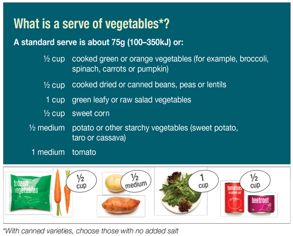
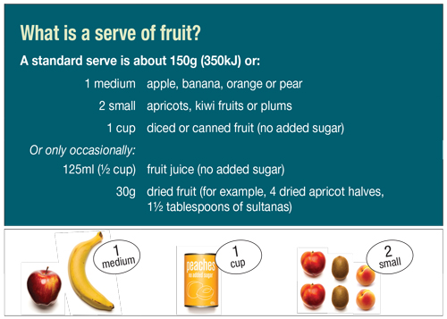
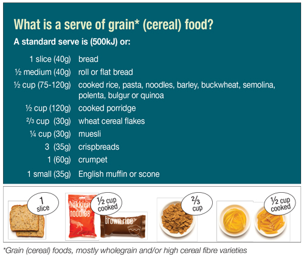
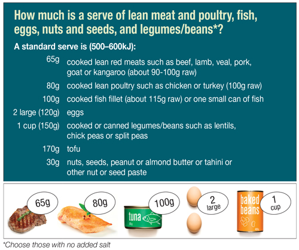
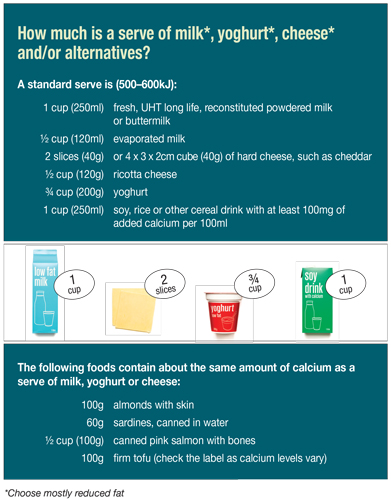

Healthy eating
- Why parents should eat healthily
- The 5 major food groups
- How much should you be eating?
- What does 'a serve' look like?
- Foods to limit
- Healthy eating tips
Healthy eating is important for everyone, but now that you're a parent, it's even more important!
You are your baby's most important role model and food is no exception.
Because your baby is always watching you (and trying to copy what you do), your own eating habits, and the foods you have at home, actually have a big influence on the foods that your baby learns to like and therefore eats, even if you try to teach them otherwise.
Let's use broccoli as an example.
If your baby sees you enjoying broccoli when you eat it, they are more likely to learn to enjoy broccoli (when they start solids) as well.
But if they see you pulling broccoli out of a stir-fry, leaving it on the side of your plate and screwing your nose up at it (because you don't like it) this is what they'll think is 'normal' behaviour towards broccoli.
Even if they have never tasted broccoli, they'll be more likely to dislike it because they have seen you avoiding it, which is a problem because it already takes some time for some children to like vegetables.
The same is true of meal times - whatever is normal in your household (e.g. sitting on the couch watching TV, the family gathered around the table together, or everyone just grazing directly from packets whenever they're hungry) is what your baby will learn to be 'normal'.
These habits around food can be hard to break and will tend to carry on throughout their life, which is why it's so important to get healthy eating off to a great start.
Check out our healthy eating quiz for some personalised tips and if you're breastfeeding, see our healthy eating tips specific for breastfeeding mums in the breastfeeding section.
The 5 major food groups
When you're busy adjusting to being a new parent, it's easy to forget to look after yourself. Trying to maintain a healthy diet will help boost your wellbeing and keep you energised, which can promote positive mental health (mood) while adjusting to your new role.
As a bonus, by eating healthy foods yourself, you'll also be showing your baby how to eat healthily which in turn increases the chance of your baby adopting healthy habits too!
To make sure you are eating well, aim to enjoy a variety of foods from the 5 major food groups every day:
- Vegetables and legumes/beans
- Fruit
- Grain (cereal) foods, mostly wholegrain
- Lean meat and poultry, fish, eggs, nuts and seeds, and legumes/beans
- Milk, yoghurt, cheese and/or alternatives (mostly reduced fat)
How much should you be eating?
The amount you need to eat every day depends on your gender and whether or not you are breastfeeding. This is because continually making breastmilk for your baby means you need to eat extra nutrients and energy (kilojoules/calories)!
Use the below table to work out how much you should be eating from each of the 5 major food groups but keep in mind that this is a guide and you may need to eat more or less than recommended, depending on your physical activity levels.
Recommended average daily number of serves from the 5 food groups
| Women aged 19-50 | Men aged 19-50 | Breastfeeding women | |
|---|---|---|---|
| Vegetables and legumes/beans | 5 | 6 | 7 ½ |
| Fruit | 2 | 2 | 2 |
| Grain (cereal) foods, mostly wholegrain | 6 | 6 | 9 |
| Lean meat and poultry, fish, eggs,nuts and seeds, and legumes/beans | 2 ½ | 3 | 2 ½ |
| Milk, yoghurt, cheese and/or alternatives (mostly reduced fat) | 2 ½ | 2 ½ | 2 ½ |
| Women aged 19-50 | Men aged 19-50 | Breastfeeding women | |
| Fruit | 2 | 2 | 2 |
| Grain (cereal) foods, mostly wholegrain | 6 | 6 | 9 |
| Lean meat and poultry, fish, eggs, nuts and seeds, and legumes/beans | 2 ½ | 3 | 2 ½ |
| Milk, yoghurt, cheese and/or alternatives (mostly reduced fat) | 2 ½ | 2 ½ | 2 ½ |
Source: National Health and Medical Research Council
Not sure what 'a serve' looks like
Eating the recommended number of serves from each of the 5 major food groups doesn't mean you have to eat piles and piles of the same food - the more variety you add, the more variety in nutrients you gain and the more interesting it is for your taste buds!
The following are guides to how big a serve is for foods within each of the 5 food groups.

Source: National Health and Medical Research Council

Source: National Health and Medical Research Council

Source: National Health and Medical Research Council

Source: National Health and Medical Research Council

Source: National Health and Medical Research Council
Foods to limit
Some foods offer very little or no nutritional benefit. These discretionary or 'sometimes' foods (sometimes called junk foods) are often high in sugar, fat and salt and although they might make you feel good in the short term, they often leave you feeling sluggish and unwell in the long term.
Some examples of discretionary foods include:
- ice cream, confectionary and chocolate
- meat pies and pastries
- sausages and processed meats (e.g. ham, salami)
- commercial burgers, hot chips and fried foods
- cream and butter
- sugary cordials, soft drinks, iced teas, sports drinks and fruit drinks
- alcohol
Eating 'sometimes' foods can be tempting when you're tired and feel like a 'pick me up' and of course it's OK to eat these foods sometimes, but healthy foods are always a better choice. This is important for good health, helps prevent disease and as a bonus, can also help your hip pocket, especially when choosing fruit and vegetables that are in season.
Where possible, focus on choosing healthy foods for every day and try to limit the amount of discretionary foods you have.
Healthy eating tips
Healthy eating doesn't need to be hard! In fact, it can even save you both valuable time and money!
Try setting yourself the target of reaching your recommended daily number of serves from each of the 5 major food groups each day. Even if you don't reach it, every step closer will bring with it better health!
Many of us find it hard to fit enough fruit and vegetables into our daily eating. But the good news is that it doesn't have to be. Try these tips to make a habit of reaching your recommended daily number of serves of fruit and vegetables every day.
When choosing fruits and vegetables, try to remember to 'colour every plate like a rainbow', that is, opt for a variety of different coloured fruit and vegetables every day. This makes eating your fruit and vegetables more interesting for your taste buds whilst also increasing the number of different nutrients you receive!
Tips for getting enough fruit and vegetables
- leave a bowl of fruit out where you will see them to remind you to eat them
- raw vegetables can make a quick and easy snack (e.g. carrot, celery, cucumber) - try dipping into low fat unsweetened plain natural yoghurt or hummus for extra flavour and energy
- try having 1-2 meat free days every week, focusing on beans/lentils, vegetables, tofu or egg instead (e.g. vegetable stir-fry, bean burrito, lentil cottage pie or mixed vegetable spaghetti Bolognese) - many people enjoy the challenge of a 'Meatless' or 'Meat Free' Monday
- try spreading avocado on toast (or even drizzling a little olive oil) instead of butter
- bulk out meals like soups, casseroles and stews with lentils (dried or canned) or any extra vegetables you have in the fridge - this also makes meat stretch further, saving you money
- check out the recipes section for more ideas!
Do you find yourself skipping the healthier foods in the 5 major food groups because you tend to fill up on the foods that fall under the discretionary or 'sometimes' foods label (sometimes called junk foods)?
There's nothing wrong with enjoying these foods now and again but it's best to limit the amount of discretionary foods you have and instead focus on choosing healthy foods for every day.
Tips for cutting down on discretionary foods
- keep a bottle or glass of water handy during the day to remind you to drink it (instead of drinks with added sugar) - this will also save money as water from the tap is essentially free!
- avoid fried foods when ordering takeaway - choose foods that have some vegetables included (e.g. vegetable noodles, stir fries, salads or a vegetable pizza)
- remind yourself to snack on fruit and vegetables by keeping these in places you can readily see (e.g. a fruit bowl on the table or cut up vegetables right in front of you when you open the fridge)
- try not to do your shopping when you're hungry as you'll be more likely to buy snack foods high in sugar, salt and fat (which also tend to cost you more money)
- check out the recipes section for some easy healthy recipes that taste great!
Don't forget that foods like avocado, olive oil, salt-free peanut butter, nuts and seeds are great sources of 'good' fats and should be eaten as part of a healthy diet in small amounts.
Many people wrongly think that eating healthily is expensive or time consuming but it certainly doesn't have to be! In fact, healthy eating can be both cheap and quick - check out our tips to save time and money!
Tips for saving valuable time and money
- frozen vegetables are generally just as good for you as fresh vegetables because they are frozen as soon as they're picked - keep some in your freezer so you've always got some on hand
- buy fruit and vegetables that are in season for maximum freshness and quality at the lowest price
- make extra meals and snacks so these leftovers that can be eaten for lunch or dinner the next day or frozen for another time
- save food preparation time by buying red meat or chicken that is already sliced or marinated
- stretch your budget further by reducing the amount of meat in meals like Bolognese, pies and casseroles - replace with extra vegetables
- try to prepare your main meal at a time when your baby is settled or sleeping
- make meals at home (instead of buying them ready made or as takeaways) wherever possible - this saves you money and also gives you control over exactly what goes into your food